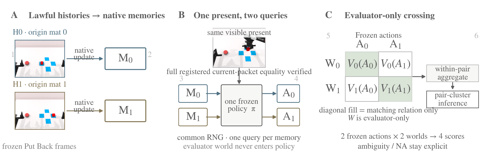
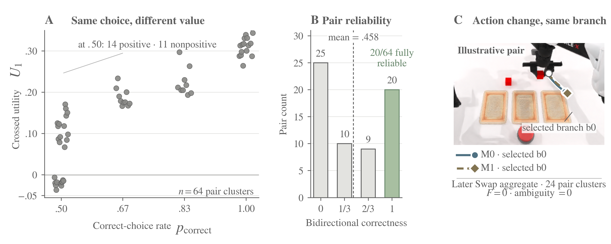
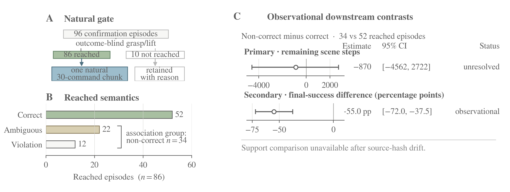
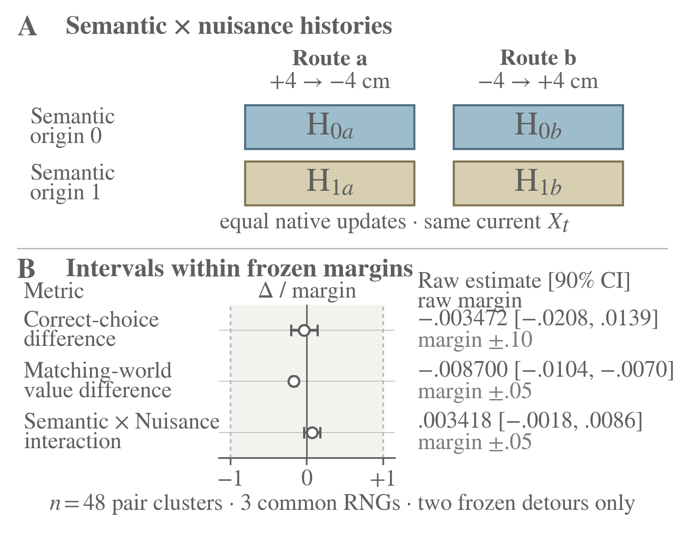
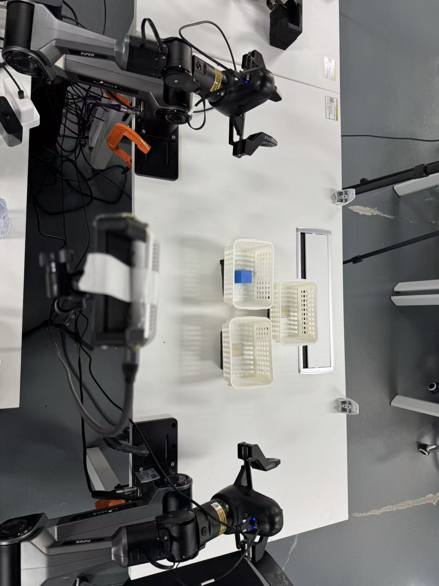
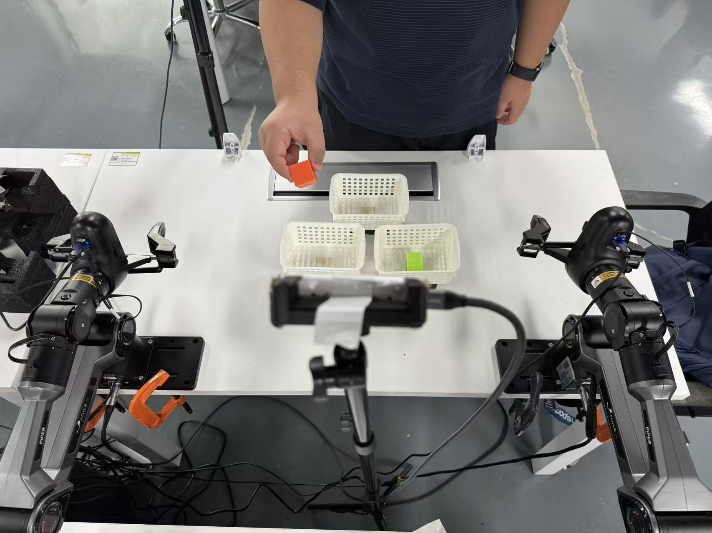

Mem-0 · Put Back
Every audited pair changes action, but only 20/64 pairs are fully reliable.
Counterfactual Memory Audit · ICRA 2027 submission
History-conditioned policies can change actions under memory interventions without reliably using memory to choose the action the past warrants.
A robot returning a block to its origin tray may encounter two task-consistent pasts that reconverge to the same current input but warrant different actions. Yet memory-policy evaluations often rely on task success or action change under memory perturbation, neither of which establishes that memory guides the decision. We propose the Counterfactual Memory Audit (CMA), an evaluation protocol that crosses two histories at a verified-identical present, queries a frozen policy under common randomness, and evaluates each saved action under both pasts. This separates memory sensitivity, warranted choice, matched-world physical value, and per-pair reliability. On Mem-0, every audited Put Back pair changes action, but only 20/64 pairs are fully reliable; at a later Swap decision, all paired actions change while both memories select the same branch. Native interventions further show closed-loop influence: replacing the history bank redirects behavior toward the replaced content, while restoring a 4096-byte protected anchor recovers 38.9 points of Swap success lost to injected bank faults. On a dual-arm physical platform, memory changes saved actions, yet five of nine completed Put Back manipulations reach the wrong target. These results show that a robot can remember and react without reliably using memory to choose the behavior its past warrants. CMA provides a decision-level audit for distinguishing these cases.
Full submission video. Playback stays in the browser and does not start on its own.
CMA holds fixed everything the policy can see and changes only what it remembers. Two task-consistent histories, generated by the task’s own motion primitives, warrant different branches. Each history updates its native memory. Both then reconverge to one current packet whose non-memory inputs have been verified identical.
A frozen policy is queried once per memory under a shared random seed. The two saved actions are scored in both evaluator-only worlds. Those worlds supply the branch oracle and the value functional. They never enter the policy, and they are not used to decide which pairs are eligible.
The subjects are frozen checkpoints of Mem-0 (RMBench) and BridgeVLA++, analyzed separately. The same crossing is later run on a dual-arm physical platform.
Does changing memory change the action?
Does the change favor the branch encoded by the memory?
When memory matches the world, does the selected action improve continuous physical value?
Does the effect hold in both directions and under every registered action seed?
Method clip. The saved actions are scored only after they leave the policy.
Panel A builds two lawful histories and their native memories. Panel B queries one frozen policy once per memory on the shared present. Panel C scores the saved actions only after they cross into evaluator worlds.

Sensitivity, choice, physical value, and pair reliability need not agree. On Mem-0 Put Back, every audited pair changes action, but only 20/64 pairs are fully reliable. At a later Swap decision, all paired actions change while both memories select the same branch.

An outcome-blind detector asks whether the audited decision structure appears in untreated episodes. A separate control crosses semantic origin with two detour routes that restore the same current. Nuisance effects are judged by equivalence to preregistered margins, not by a failure to find a difference.


The crossing is reproduced on a dual-arm PiPER platform with task-specific Mem-0 modules, retrained for the embodiment and frozen before the audit. Put Back takes the warranted return from the robot’s own manipulation history. Repick takes the warranted selection from a completed external event. Resets are measured before each execution. Memory changes the saved actions, yet five of nine completed Put Back manipulations reach the wrong target.
The clips are annotated excerpts. A shown pair illustrates the audit; it does not stand in for every trial.
A completed manipulation can still choose the wrong target. Put Back, remembered origin on the right.


Episode success and action change are not the same claim as memory-guided choice.
Mem-0 · Put Back
Every audited pair changes action, but only 20/64 pairs are fully reliable.
Later Swap
All paired actions change while both memories select the same branch.
Native intervention
Replacing the history bank redirects behavior. Restoring a 4096-byte protected anchor recovers 38.9 points of Swap success lost to injected bank faults.
Dual-arm physical
Memory changes saved actions, yet five of nine completed Put Back manipulations reach the wrong target.
Audited subjects: Mem-0 (RMBench) and BridgeVLA++.
@article{zhang2026cma,
title={Memory That Changes Action Is Not Memory That Guides It: Counterfactual Auditing of History-Conditioned Robot Policies},
author={Zhang, Jiajie and Xiang, Yankai and Chen, Changhao},
journal={arXiv preprint arXiv:2609.27247},
year={2026}
}